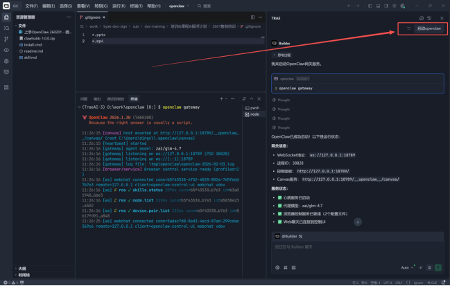
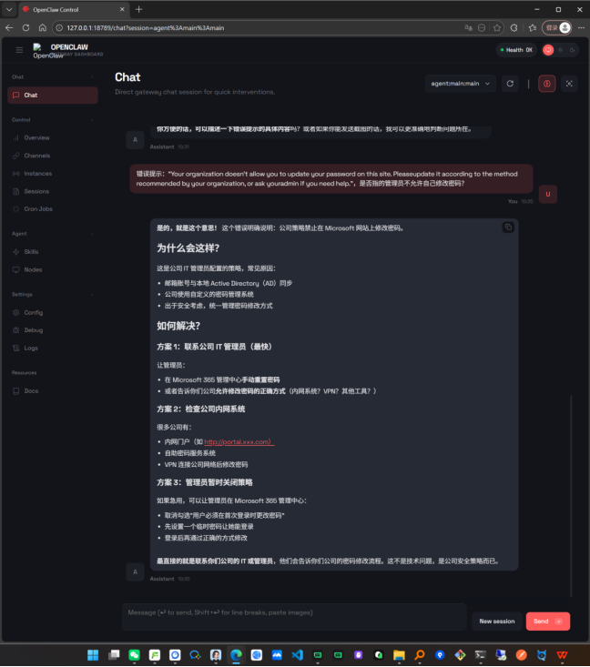
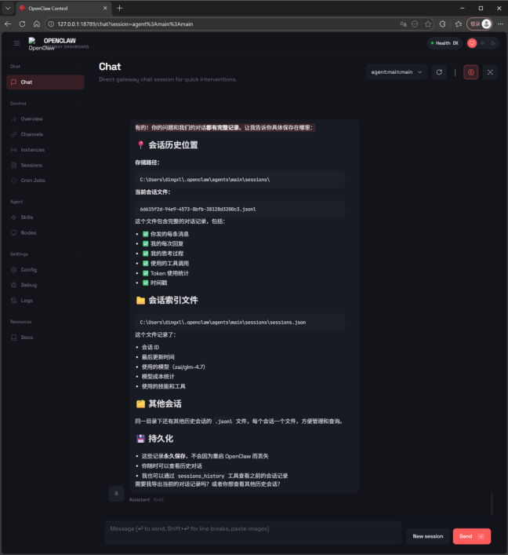
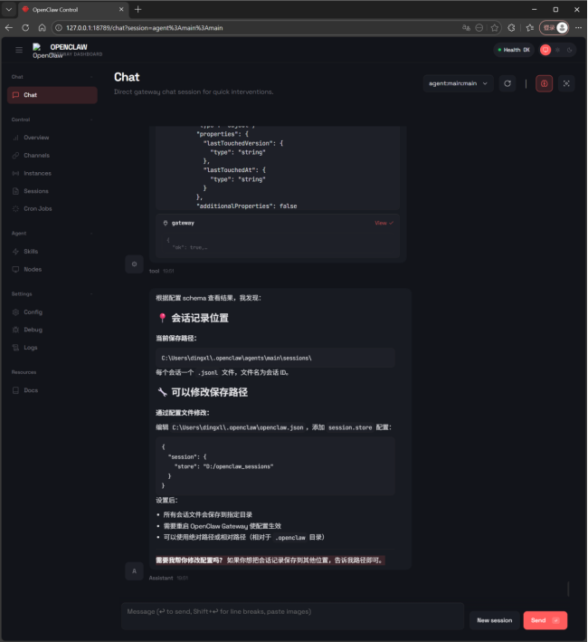
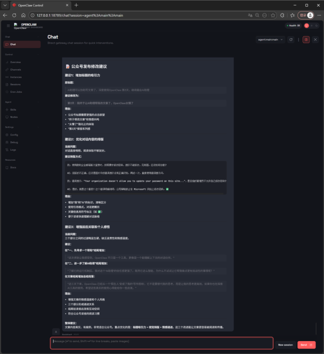
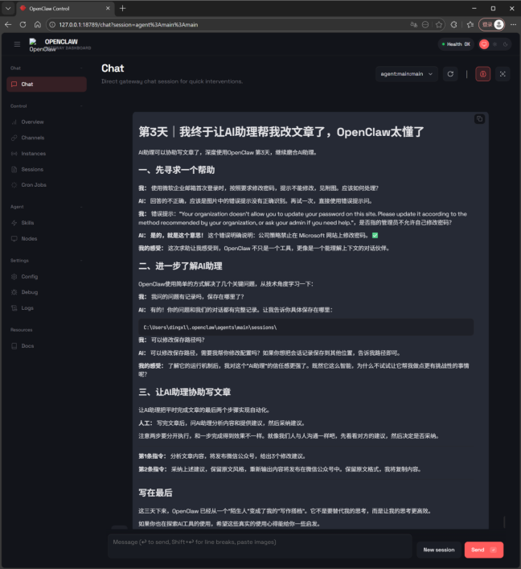

AI助理可以协助写文章了，深度使用OpenClaw 第3天，继续磨合AI助理。
一，先寻求一个帮助
二，进一步了解AI助理
三，让AI助理协助写文章
打开电脑，首先唤醒AI助理，输入指令：“启动openclaw”。
注：使用Trae的对话方式，使用自然语言交互，不需要记住命令openclaw gateway这类直接操作方式，轻松抹平技术门槛。

一，先寻求一个帮助
我：使用微软企业邮箱首次登录时，按照要求修改密码，提示不能修改，见附图。应该如何处理？
AI回答的不正确，应该是图片中的错误提示没有正确识别。再试一次，直接使用错误提示问。
我：错误提示：“Your organization doesn't allow you to update your password on this site. Pleaseupdate it according to the method recommended by your organization, or ask youradmin if you need help.”，是否指的管理员不允许自己修改密码？
AI：是的，就是这个意思！这个错误明确说明：公司策略禁止在 Microsoft 网站上修改密码。✅
我的感受：这次求助让我感受到，OpenClaw 不只是一个工具，更像是一个能理解上下文的对话伙伴。

二，进一步了解AI助理
OpenClaw使用简单的方式解决了几个关键问题，从技术角度学习一下：
我：我问的问题有记录吗，保存在哪里了？
AI：有的！你的问题和我们的对话都有完整记录。让我告诉你具体保存在哪里：

我：可以修改保存路径吗？
AI：可以修改保存路径，需要我帮你修改配置吗？ 如果你想把会话记录保存到其他位置，告诉我路径即可。

三，让AI助理协助写文章
让AI助理把平时完成文章的最后两个步骤实现自动化。
人工：写完文章后，问AI助理分析内容和提供建议，然后采纳建议。
注意两步要分开执行，和一步完成得到效果不一样。就像我们人与人沟通一样吧，先看看对方的建议，然后决定是否采纳。
第1条指令：分析文章内容，将发布微信公众号，给出3个修改建议。
第2条指令：采纳上述建议，保留原文风格，重新输出内容将发布在微信公众号中。保留原文格式，我将复制内容。
AI给出的建议很实用，包括“标题吸引力 + 视觉排版 + 情感递进”，这三个改进能让文章更容易被阅读和传播。
AI在给出建议时，提供的理由有充分的逻辑，以及开头的亮点总结和结尾的整体建议，详见附图：

四，写在最后
这三天下来，OpenClaw 已经从一个'陌生人'变成了我的'写作搭档'。它不是要替代我的思考，而是让我的思考更高效。如果你也在探索AI工具的使用，希望这些真实的使用心得能给你一些启发。
附：
AI修改后的原文，去掉了一些赘述，增加了几句过渡，详略得当，要点突出，文采很好。
